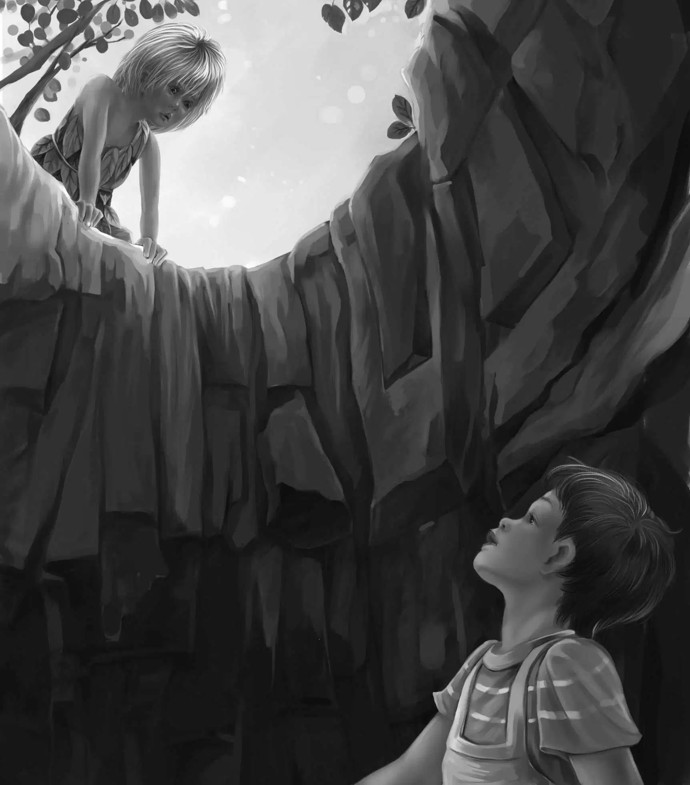

Trapped
一天，亨利突然说道：“今天我才不想睡午觉呐！”
“我也是！”班尼和迈克一起喊道，“咱们去树林里散步吧！那儿凉快着呢！”
奥登先生笑了：“我还是想睡个午觉。”
纳思正在修补女孩们的茅屋顶上的破洞。“我就留在家里修屋顶，”他说，“你们自己随意去逛吧，反正这里很安全。”
亨利说：“我想去小岛的另一边看看。”
纳思点了点头，对亨利说：“要抄近路的话，就从泉水后绕过去，翻过泉水后面的岩石，就能看到海滩了。小岛那头什么都没有，只有海滩。”
“好的，”亨利说，“那我们准备出发啦！”
孩子们跳将起来，立刻动身了。纳思停下手里的活儿，目送着他们走远，不禁说道：“奥登先生，他们真是一群好孩子。”
“没错，”奥登先生说，“每一个都是好孩子。”
接着，纳思继续忙活，奥登先生则回到自己的茅屋准备睡午觉。
不过没过多久，奥登先生又出现在门口，他抬头看着屋顶上的纳思说：“我还是不放心让孩子们单独去溜达。你也知道，岛上有不速之客。你去跟着他们好吗？只是别让他们发现了。”
纳思平静地说：“好的，先生。其实我也想要跟着他们，又怕打扰了他们的兴致。您放心好啦，我绝不会让他们发现的。”
“很好！”奥登先生说，“谢谢你，纳思！你是最了解我的心意的，孩子们喜欢独立处理问题，我要尊重他们。”
孩子们开心地在树丛中穿行，周围是茂密的蕨类植物。杰西说：“亨利，很刺激吧？这可是我们第一次单独行动噢！这让我想起了在棚车里的日子。”
亨利笑着对妹妹说：“是啊，尽管那时候我们只能靠自己，没人帮助我们，但还是非常有趣。”
“班尼，那时候是杰西看管你吗？”迈克问。
“是照顾，不是看管！”班尼说。
“又来了，”迈克大声说，“反正你明白我的意思嘛！”
“好吧！”班尼说，“当时不光是杰西，哥哥姐姐们都很照顾我，谁让我最小呢？他们还教会了我认字呢！”
“你不用上学吗？”迈克问。
“学是后来才上的。”班尼说，“对了，你还记得咱们在学校里的趣事吗？我们有位好老师，她叫什么来着？”
“我也忘了，”迈克说，“我只记得她人非常好。她以前总是跟我们说，其实香蕉是长在树上的。现在我们真的眼见为实了，对吧，小班班？”
“她的名字是不是和牛有关？”班尼说。
“牛？”迈克说，“不可能，跟牛没关系。我敢肯定！”
说话间，孩子们很快来到了泉水那儿，他们欣赏了一会儿漂亮的小瀑布，亨利则仔细观察了一下要爬的石山。
“看起来有点难度呢！”他说，“不过我相信大家都能爬过去！”
“咱们可以从石像的鼻子那儿开始爬！”班尼说着，腾的一下爬到鼻子上，坐了下来。迈克也爬了过去，坐在石像的下巴上。这两个地方坐着都很舒服。
“总有一天，我要找到石像的下半身，”迈克说，“看看它究竟有没有脚。”
“估计脚都被叶子和树丛盖住了，”杰西说，“不过相信咱们肯定能找到。”
“今天就别找啦，”班尼说，“咱们的任务是要翻过这座小山。”
亨利准备开始行动了，“你们待着别动，让我先爬。”
亨利迅速攀缘而上。没多久，他便回头大声喊道：“半山腰有块平石板，很宽敞，随便站着、坐着、休息都成，大家快上来吧！”
迈克说：“维莉，我来帮你。拉着我的手。”
“谢谢迈克，”维莉说，“爬山你比我厉害多啦！”
他们奋力往上爬着。“维莉，这儿有个落脚点，”迈克说，“还有一步就到了，等我先爬上去，再来拉你。”
迈克虽然外表粗犷，对维莉却非常温柔。他们终于到达了平石板，可以坐下来休息片刻了。
班尼却不愿多坐。他站起身，环视着四周。最后转过身，望向身后。
“看！”他说，“那儿有棵树桩！”
的确有棵树桩，不过是棵没有根基的树桩。
亨利激动起来。“大家快看！”他大声喊道，“这树桩不是自己长出来的，显然是有人故意放在这儿的！”
“没错，”杰西说，“瞧它四周的石头，是用来固定树桩的。”
“有石头护着，树桩就不会倒了。”班尼补充道。
杰西缓缓地说：“不知道这树桩是用来干什么的。”
“肯定是用来蹬脚当台阶的。”班尼说。
“班尼，我赞成你的说法，”亨利大声说道，“我也要踩上去看看，到底能发现什么。”
亨利小心翼翼地把一只脚踏在树桩上，扶着旁边的小树，站了上去。
“简直是难以想象！”他一边看，一边惊叫起来。
“你看到了什么？”杰西大声问。
“真不敢相信，”亨利高声回答道，“上面有个山洞，看起来跟我们之前的棚车一样呢！”
“哦，不！”杰西无比惊诧，“亨利，这不可能！”
“绝对是真的！”亨利回答，“居然在南太平洋上发现了这样的山洞！不信你们自己上来看看吧！树墩上只能站一个人，杰西，等我下去，你再上来。”
说完，亨利跳了下来，然后扶着杰西爬上树桩。
“天啊，维莉，”杰西大声叫了起来，“岩石里真有个大洞，洞很深，地板就是床，上面铺着叶子和蕨。亨利，你看到那排架子了吗？”
“当然看到啦！”亨利说，“所以我才说像我们的棚车嘛！那架子上摆着盘子呢！”
“杰西，是什么样的盘子？”班尼大声问道。他已经迫不及待了。
“是贝壳做成的盘子，排成一排。班尼，你一定得看看这些餐具，我这就下来。”
维莉本来排在班尼前面，闻言立刻说：“班尼，你先上去看吧！”
班尼兴奋不已。亨利扶着他爬上了树桩，接下来，班尼看到了让他无比兴奋的东西。
“我的小粉杯！”他激动地喊道，“那个杯子跟我的小粉杯一模一样！”
“我也觉得很像呢！”杰西说，“看起来，一定是有人挖了这个洞用来睡觉的。”
“也可能是用来躲雨的，”亨利说，“洞顶的石头是突出来的，正好可以挡雨。”
“让我试试，”迈克说，“看究竟能不能躺下来睡觉。”
班尼跳下来，迈克爬了上去。他在床上躺了下来。
“地板硬梆梆的，跟石头一样。我在这儿可睡不着！”迈克大声说。
“别无选择的时候——比如外面正下着瓢泼大雨，你就能睡得着啦。”亨利说。
班尼重新爬回到石像的鼻子那儿，坐下来，眺望着迈克。突然，他头顶的树叶开始摇晃起来，开始只是一棵树在动，接着，另一棵也开始摆动起来。班尼想：“难道有动物在树上跳来跳去？”
班尼没有出声，沿着树走下去，他仰着头，哗啦啦地冲过灌木和蕨丛，始终盯着树梢看。
“绝对没错，”他想，“一定是有人在树上蹿来蹿去，当然，也有可能是猴子。无论如何，这次我一定要让真相大白！”
班尼继续跟踪着，其间由于太激动，他绊了两次跤，但并不妨碍他随即跳起身追赶。不明之物不停地在树梢间穿越，班尼则不停地在树下追赶着。山洞的事早已被他抛在脑后，他现在满脑子想的都是怎么解开谜团。
“那家伙难道要一直跑下去吗？”班尼已经累得气喘吁吁了，灌木丛和蕨丛都比他高大，要穿越它们绝不容易。“那家伙不停下来，我就不停！”
但他还是停了下来——他一脚踏空，掉下了陷阱。掉落的时候，班尼不禁祈祷道：“但愿陷阱里没水！”

如班尼所愿，陷阱里没有水，但相当深。“真是万幸啊！”班尼说，“可我怎么出去呢？还是大声呼救吧，但愿亨利能听到！”
还没等他出声，洞口就出现了一张男孩的脸。男孩很瘦，有着棕色的皮肤，披着长长的头发。
“你是谁？”班尼仰头问道。
“我是彼得。”那男孩说。
“你真像女孩，”班尼说，“居然留这么长的头发！”
“怎么会？我是彻头彻尾的男孩！”彼得说，“留长发是因为我没法自己用小刀修理头发。来，班尼，我拉你上来。把手给我！”
班尼抓住了彼得棕色的手。他本以为彼得的手也像女孩那么柔软，结果发现硬得就像小狗爪子一样。
彼得一把将班尼拉出洞口。“这个洞是我的储藏室，”彼得说，“也可以当陷阱用。”
“我早看出来了！”班尼说，“对了，你怎么知道我叫班尼？”
“我已经观察你们很久了。你们每个人我都认识。”彼得说。
两个男孩坐了下来，互相打量着对方，他们全都忘了山洞那儿的四个人。